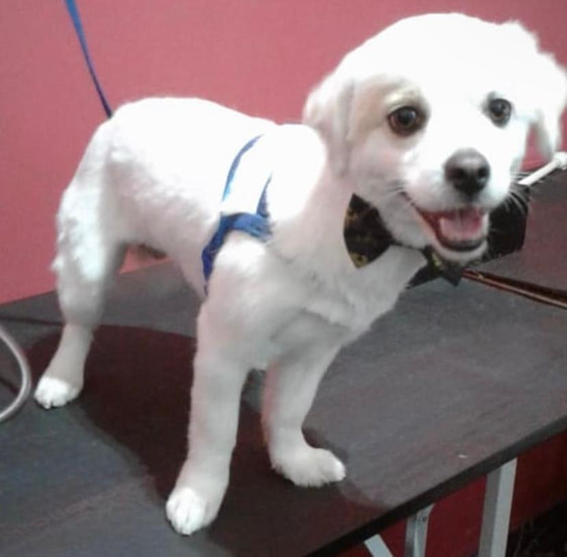
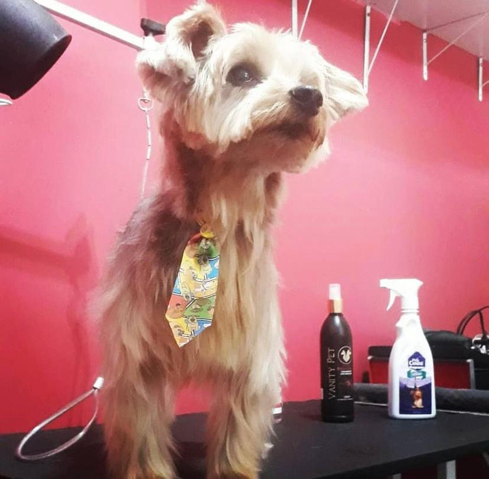

Banho e Tosa
Oferecemos o tradicional serviço de banho e tosa, onde nossos profissionais são treinados para cuidar da higiene do seu pet, sempre respeitando suas características e necessidades específicas. Seja para uma simples limpeza ou para uma tosa estilizada, cuidamos de cada detalhe para que seu animal saia da loja mais bonito e saudável.Leva e Trás
Além disso, temos o prático serviço de Leva e Trás, ideal para os tutores com rotinas corridas. Nós buscamos seu pet na sua casa e o trazemos de volta após o atendimento. Assim, você não precisa se preocupar com o deslocamento, garantindo que seu animalzinho chegue com conforto e segurança.Medicação
Outro diferencial da Lupyta PetStore é o nosso serviço de administração de medicamentos. Sabemos o quão importante é que seu pet receba a medicação correta, nas doses e horários adequados, por isso nossos profissionais estão capacitados para oferecer esse serviço de forma cuidadosa e precisa, seguindo as recomendações veterinárias.Na Lupyta PetStore, o bem-estar do seu pet está em primeiro lugar. Aqui, tratamos seu animal de estimação com carinho e profissionalismo, sempre oferecendo o melhor cuidado possível!
 